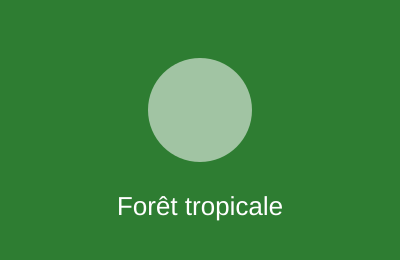
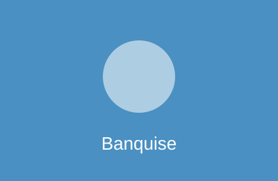
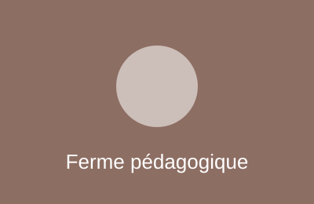
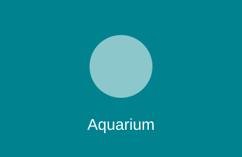

Zara
Girafe — née le 12/04/2019 — herbivore
Femelle de quatre mètres, reconnaissable à sa tache en forme de cœur sur l'épaule gauche.

Girafe — née le 12/04/2019 — herbivore
Femelle de quatre mètres, reconnaissable à sa tache en forme de cœur sur l'épaule gauche.
Girafe — né le 03/11/2024 — herbivore
Jeune mâle né au parc, encore proche de sa mère Zara.
Zèbre de Grévy — né le 21/06/2017 — herbivore
Le plus âgé du groupe, meneur du troupeau.
Zèbre de Grévy — née le 09/03/2021 — herbivore
Curieuse, s'approche souvent de la vitre d'observation.
Autruche — né le 30/09/2018 — omnivore
Deux mètres cinquante, court à soixante-dix kilomètres à l'heure dans l'enclos.
Rhinocéros blanc — né le 15/01/2012 — herbivore
En soins pour une blessure au pied, visible depuis la passerelle nord seulement.
Suricates — nés le 05/05/2022 — insectivores
Colonie de douze individus, toujours une sentinelle debout.

Capucin — né le 19/06/2016 — omnivore
Chef de groupe, ouvre les noix avec une pierre.
Capucin — née le 12/02/2025 — omnivore
Bébé de l'hiver dernier, encore porté par sa mère.
Paresseux — né le 28/02/2015 — herbivore
Dort dix-huit heures par jour dans le même arbre depuis dix ans.
Toucan toco — née le 07/07/2020 — frugivore
Bec orange de vingt centimètres, mange des papayes en vol.
Iguane vert — né le 10/10/2019 — herbivore
Un mètre soixante, immobile sur sa branche chauffée.
Anaconda — née le 04/01/2014 — carnivore
Quatre mètres, nourriture une fois par mois, souvent dans l'eau.
Ara bleu — né le 03/03/2018 — frugivore
Perte de plumes en cours de traitement, en volière de repos.

Manchot de Humboldt — né le 11/11/2020 — piscivore
Plonge à chaque nourrissage de onze heures.
Manchot de Humboldt — né le 18/01/2026 — piscivore
Né cet hiver, premier manchot éclos au parc.
Manchot de Humboldt — née le 24/12/2019 — piscivore
Mère de Flocon, très territoriale sur son nid.
Phoque gris — né le 14/05/2013 — piscivore
Deux cents kilos, adore le tunnel de verre.
Phoque gris — née le 30/06/2023 — piscivore
Jeune femelle joueuse, nourrie à la main lors des animations.

Chèvre naine — née le 14/02/2021 — herbivore
Grimpe sur tout ce qui dépasse, mascotte des scolaires.
Chèvre naine — né le 03/02/2026 — herbivore
Chevreau du printemps, tête toute noire.
Âne du Poitou — né le 08/08/2011 — herbivore
Longs poils bruns emmêlés, promène les enfants le mercredi.
Poule de Marans — née le 04/04/2024 — omnivore
Huit poules aux œufs chocolat, ramassés à quatorze heures.
Lapin bélier — né le 09/09/2023 — herbivore
Oreilles tombantes, atelier caresses le samedi.
Vautour fauve — né le 06/06/2010 — charognard
Deux mètres soixante d'envergure, nourri à quinze heures.
Perroquet gris du Gabon — né le 31/01/2017 — frugivore
Imite la sonnerie du téléphone de l'accueil.
Chouette effraie — née le 31/10/2022 — carnivore
Visible surtout à la tombée du jour, vol totalement silencieux.
Flamant rose — né le 05/05/2015 — omnivore
Vingt-deux flamants, couleur due aux crevettes de leur alimentation.

Raie pastenague — née le 02/02/2018 — carnivore
Passe au-dessus du tunnel toutes les dix minutes.
Hippocampe — né le 08/05/2025 — carnivore
Vingt individus, les mâles portent les œufs.
Poisson-clown — né le 01/06/2024 — omnivore
Trente poissons dans leurs anémones, bassin numéro 4.
Piranha rouge — né le 21/07/2021 — carnivore
Bassin en nettoyage, poissons transférés en réserve jusqu'à la fin du mois.